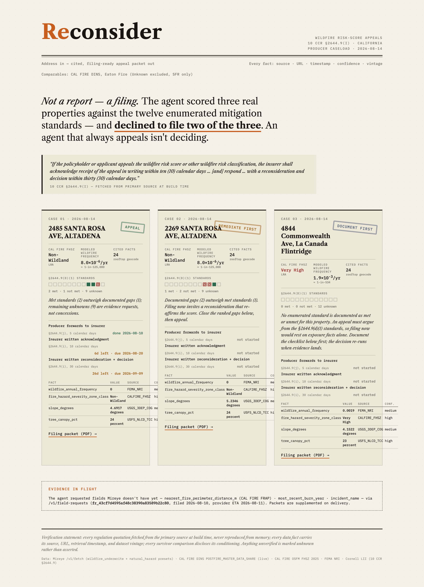

An agent that decides whether to appeal a homeowner's wildfire insurance risk score — and files the cited, legally-framed appeal when the answer is yes. Not a report. A filing — one that starts a statutory clock the insurer must answer in writing.

Reconsider reasons over physical-world data and acts: it scores a parcel against the twelve mitigation standards enumerated in 10 CCR §2644.9(d)(1), decides whether an appeal is winnable, and either assembles a filing-ready packet or returns a ranked remediation plan. Across three real properties it declined to file on two — an agent that always appeals isn't deciding.
| Property (run live) | State FHSZ | FEMA wildfire freq. | Agent decision |
|---|---|---|---|
| 2485 Santa Rosa Ave, Altadena — survived the Eaton Fire | Non-Wildland | ≈1-in-125,000/yr | Appeal |
| 2269 Santa Rosa Ave, Altadena — survived | Non-Wildland | ≈1-in-125,000/yr | Remediate first |
| 4844 Commonwealth Ave, La Cañada Flintridge | Very High | 234× higher | Don't file — document first |
Mireye's cited parcel facts (two wildfire presets, 24 fields per property — CAL FIRE FHSZ, FEMA NRI wildfire frequency, terrain, canopy, NDVI, each with source, timestamp, confidence, vintage) sit next to: CAL FIRE DINS damage inspections the regulation text (Cornell LII) a live statutory-clock engine. The DINS layer supplies survivor comparables from the Eaton Fire — 7,893 undamaged vs 9,419 destroyed structures — so each mitigation standard is corroborated by houses that actually survived with that feature. Mireye is load-bearing for a reason the survivor data can't cover: the subject house is intact, so no damage database will ever describe it — only per-field provenance gives the filing its weight.
Californians are losing home insurance to wildfire risk scores they can't see inside and
rarely contest. The right to appeal exists in statute; the evidence assembly is the work nobody does,
so the right goes unused and premiums or non-renewals stand. Reconsider does that work in one command —
and the argument survives scrutiny: every statute quote is fetched from the primary source at build time,
survivor comparisons exclude Unknown values (a disclosed survivorship artifact) and
single-family-only (sheds invert the rates), and the core ember-vent effect replicates out-of-sample in
the Palisades Fire. The numbers in the packet were independently recomputed against the live data to the exact count.
The personal-lines insurance producer. 10 CCR §2644.9(j) gives them a 5-day statutory duty to forward a client's appeal — they are in the loop by law, not by marketing. Reconsider tracks every appeal's clocks (5-day forward, 10-day acknowledgment, 30-day decision) and turns a missed insurer deadline into the producer's leverage. Score appeals recur every policy year per policy — a renewing wedge, not a one-time dispute.
Mid-build the agent wanted a field Mireye doesn't have yet — distance to the nearest CAL FIRE
FRAP fire perimeter and last burn year — and filed it through /v1/field-requests (accepted as
three new builds). Pending requests render in every packet as "evidence in flight." The agent doesn't just
consume the API; it extends it.
npm install && npm run packet -- "2485 SANTA ROSA AVE, ALTADENA, CA 91001" · npm run appeals · npm test (9 passing)